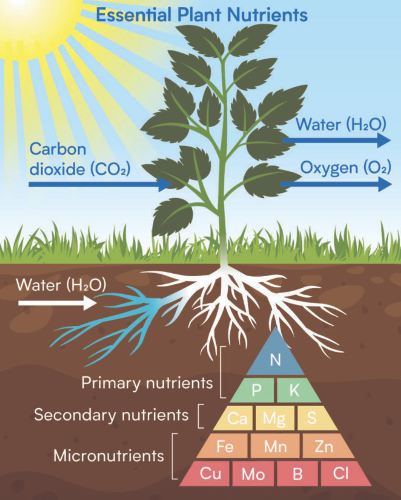

Plant Nutrition: How Plants Obtain and Use Food
Plant nutrition refers to the processes by which plants obtain and utilize the chemical elements necessary for their growth, metabolism, and reproduction. Unlike animals, plants are autotrophs, meaning they produce their own food through photosynthesis. However, they still require various inorganic nutrients from their environment.
Essential Nutrients for Plants
Plants require a range of chemical elements, typically categorized into two groups based on the quantities needed:
Macronutrients (Needed in Larger Quantities)
These are the building blocks and major components of plant structures and metabolic processes.
- Carbon (C), Hydrogen (H), Oxygen (O): Form the backbone of all organic compounds (carbohydrates, proteins, lipids).
- Nitrogen (N): Crucial for proteins, nucleic acids (DNA, RNA), chlorophyll.
- Phosphorus (P):: Essential for ATP (energy currency), nucleic acids, phospholipids (cell membranes).
- Potassium (K): Important for enzyme activation, stomatal opening and closing, water balance.
- Calcium (Ca): Strengthens cell walls, involved in cell signaling.
- Magnesium (Mg): Central component of chlorophyll, activates many enzymes.
- Sulfur (S): Component of some amino acids and vitamins.
Micronutrients (Needed in Smaller Quantities / Trace Elements)
Though needed in small amounts, they are vital for enzyme function and overall plant health.
- Iron (Fe): Essential for chlorophyll synthesis and electron transport.
- Manganese (Mn): Involved in photosynthesis and enzyme activation.
- Boron (B): Important for cell wall formation, pollen tube growth.
- Zinc (Zn):: Activates enzymes, involved in hormone synthesis.
- Copper (Cu): Component of enzymes involved in photosynthesis and respiration.
- Molybdenum (Mo): Essential for nitrogen fixation.
- Chlorine (Cl): Involved in osmosis and photosynthesis.
- Nickel (Ni): Component of an enzyme involved in nitrogen metabolism.
Sources and Uptake of Plant Nutrients
Plants absorb various compounds from their environment through specific mechanisms, primarily via their roots and leaves.
- Carbon Dioxide (CO2):
- Source: Atmosphere.
- Absorption Site: Leaves, through tiny pores called stomata.
- Mechanism: Primarily diffusion, moving from higher concentration in the air to lower concentration inside the leaf.
- Water (H2O):
- Source: Soil.
- Absorption Site: Roots, especially specialized root hairs (which greatly increase surface area).
- Mechanism: Primarily osmosis, moving from a region of higher water potential in the soil to lower water potential in the root cells.
- Mineral Ions (e.g., Nitrate (NO3-), Ammonium (NH4+), Phosphate (PO43-), Potassium (K+), Calcium (Ca2+), Magnesium (Mg2+), Sulfate (SO42-), Iron (Fe2+)):
- Source: Soil, dissolved in soil water.
- Absorption Site: Roots, particularly root hairs.
- Mechanism:
- Many ions are absorbed by active transport, which requires energy (ATP) to move them against their concentration gradient into the root cells. This is why root cells have abundant mitochondria.
- Some ions may also move by diffusion if there is a favorable concentration gradient.
Once absorbed, water and minerals are transported upwards through the xylem tissue to the rest of the plant.
Photosynthesis: Producing Organic Food
This is the core process of plant nutrition, converting light energy into chemical energy in the form of glucose.
- Overall Equation:
6CO2 + 6H2O + Light Energy → C6H12O6 + 6O2
(Carbon Dioxide + Water + Light Energy → Glucose + Oxygen)
- Site: Occurs mainly in the chloroplasts of plant cells, particularly in the leaves. Chlorophyll, a green pigment, is essential for capturing light energy.
- Brief Overview of Stages:
- Light-Dependent Reactions: Occur in the thylakoid membranes of chloroplasts. Light energy is absorbed by chlorophyll, splitting water molecules (H2O) to release oxygen (O2) as a byproduct. This energy is then converted into chemical energy in the form of ATP and NADPH (energy-carrying molecules).
- Light-Independent Reactions (Calvin Cycle): Occur in the stroma of chloroplasts. The ATP and NADPH produced in the light-dependent reactions are used to fix carbon dioxide (CO2) from the atmosphere and convert it into glucose (C6H12O6). This process does not directly require light but relies on the products of the light-dependent reactions.
Factors Affecting Plant Nutrition and Growth
The availability and balance of nutrients, along with environmental conditions, significantly impact plant health and growth.
- Light Intensity: Affects the rate of photosynthesis.
- Carbon Dioxide Concentration: A key reactant for photosynthesis.
- Temperature: Affects enzyme activity for both photosynthesis and nutrient uptake.
- Water Availability: Essential for photosynthesis, nutrient transport, and maintaining turgor.
- Mineral Availability: Directly impacts growth; insufficient minerals lead to deficiency symptoms.
- Soil pH: Affects the solubility and availability of mineral nutrients in the soil.
- Soil Aeration: Roots need oxygen for respiration to perform active transport of minerals.
Common Nutrient Deficiency Symptoms in Plants
When plants lack essential nutrients, they exhibit specific visual symptoms, which can help in diagnosis.
| Deficient Nutrient |
Common Deficiency Symptoms |
Location of Symptoms (often) |
| Nitrogen (N) |
General yellowing (chlorosis) of older leaves, stunted growth, pale green appearance. |
Older leaves first (mobile in plant) |
| Phosphorus (P) |
Dark green or purplish discoloration of leaves, stunted growth, poor root development. |
Older leaves first (mobile in plant) |
| Potassium (K) |
Yellowing and browning (necrosis) of leaf margins (edges), especially on older leaves; weak stems. |
Older leaves first (mobile in plant) |
| Magnesium (Mg) |
Interveinal chlorosis (yellowing between veins) on older leaves, while veins remain green. |
Older leaves first (mobile in plant) |
| Iron (Fe) |
Interveinal chlorosis on younger leaves; severe cases lead to overall yellowing or whitening. |
Younger leaves first (immobile in plant) |
| Calcium (Ca) |
Distorted or stunted new growth (e.g., young leaves, growing tips), blossom-end rot in fruits. |
Younger leaves/growing tips first (immobile in plant) |

Written by Kasiban Parthipan